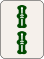
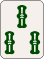
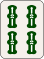
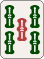
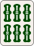
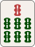
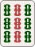

청일색 FAQ & 실전 대기 맞추기 퀴즈
궁금증은 풀고, 대기 계산 실력은 쑥쑥!
청일색을 만들면서 자주 접하는 알쏭달쏭한 규칙 질문들을 모아 시원하게 답해드립니다. 또한, 실전 대국에서 흔히 만나는 다면대기 형태를 직접 분석해 보며 청일색 계산 감각을 익힐 수 있는 실전 퀴즈도 함께 풀어보세요!
1. 청일색 자주 묻는 질문 (FAQ)
Q1. 청일색을 울어서(치/퐁) 만들었는데, '핑후(평화)' 역이 같이 적용되나요?
A. 아니요, 적용되지 않습니다. 핑후(平和)는 울지 않은 상태(멘젠)에서만 성립하는 역입니다. 청일색을 치나 퐁으로 울었다면 핑후 조건(양면 대기, 자패 아닌 머리 등)을 만족하더라도 핑후의 1판은 더해지지 않으며, 울린 청일색 기본 5판만 적용됩니다.
Q2. 손패에 같은 수패가 많을 때, 울기(치 vs 퐁)의 우선순위나 선택 기준이 있나요?
A. 손패의 '우선 울기 대상'을 구분해야 합니다. 자신의 순서를 넓혀주는 변짱(1-2)이나 간짱(1-3) 형태는 상대가 내줄 때 '치'로 빠르게 받아서 슌츠로 고정하는 것이 유리합니다. 반면, 몸통을 확실히 늘려주면서 손패를 단순화하고 싶다면 '퐁'을 받아 암각을 완성합니다. 단, 울수록 대기패의 유연성(다면대기 확장성)이 떨어지므로, 울고 난 후에도 2면 이상의 대기가 남는지를 항상 체크하세요.
Q3. 청일색을 만들 때 탕야오(斷么九)가 같이 붙으면 몇 판인가요?
A. 울었을 때는 6판, 안 울었을 때는 7판이 됩니다. 1과 9패 없이 2~8 수패로만 청일색을 완성하면 탕야오(+1판)가 추가됩니다. 울린 상태라면 청일색 5판 + 탕야오 1판 = 6판(하네만)이 되며, 울지 않았다면 청일색 6판 + 탕야오 1판 = 7판(하네만/배만)이 확정됩니다.
Q4. 청일색 대기가 너무 많아서 제 대기패를 다 못 외우겠어요. 쉽게 확인하는 팁이 있나요?
A. '13장 분해 규칙'을 적용해 보세요. 손패에 3장 모인 패(암각)를 먼저 떼어놓거나, 확실히 완성된 연속패(예: 1-2-3)를 손패 구석으로 치워놓고 남은 4장~7장 패의 대기를 먼저 계산하는 습관을 들이면 머릿속 과부하를 대폭 줄일 수 있습니다.
2. 실전 대기 맞추기 연습 퀴즈
아래 손패의 화료패(대기패)가 무엇인지 직접 계산해 보세요!
문제 1 [난이도: 하]
기본 양면 대기다음 13장의 통수패 형태에서 오름패(대기패)는 총 몇 종류이며, 어떤 패일까요?


👉 정답 및 해설 보기 (클릭)
정답:
 (총 2종류)
(총 2종류)
해석 과정:
-
확실하게 완성된
(안커)와
(슌츠), 그리고
(머리)를 먼저 분해해 떼어놓습니다.
-
완성된 수형들을 떼어내면 남는 손패는
총 5장이 됩니다.
-
(슌츠)를 떼면 양면이 남고, (슌츠)를 떼면 간짱이 남습니다.
-
따라서 이 오면 2-3-4 + 3-4-5, 이 오면 2-3-4 + 4-5-6으로 완성되므로 정답은
·
양면 대기입니다.
문제 2 [난이도: 중]
응용 3면 대기다음 13장의 만수패 형태에서 오름패(대기패)는 총 몇 종류이며, 어떤 패일까요?


👉 정답 및 해설 보기 (클릭)
정답:
(총 3종류)
해석 과정:
-
오른쪽 복합 수형
은
안커(또는 안커) 1개와 슌츠로 분해됩니다.
-
케이스 A ( 안커 + 머리 고정 시):
남은 패는 + 연결이 됩니다.
여기서 슌츠와 슌츠를 떼어내면 패가 남아
간짱 대기가 됩니다.
-
케이스 B ( 안커 + 안커 고정 시):
우측 이 좌측 과 합쳐져 슌츠를 형성합니다.
이 경우 남은 에서 머리 지정 시 양면이 되어
· 대기가 성립합니다.
-
종합하면 최종 대기패는
·
·
총 3종류입니다.
문제 3 [난이도: 상]
복잡한 다면대기다음 13장의 삭수패 형태에서 오름패(대기패)는 총 몇 종류이며, 어떤 패일까요?







👉 정답 및 해설 보기 (클릭)
정답: (총 6면 대기: 1, 2, 4, 5, 7, 8삭)
해석 과정:
1. '99삭'을 머리로 사용하는 경우 (1·4·7삭 대기)
머리와 몸통 1개를 고정하면 남는 패는 (8장)이 되어 1, 4, 7삭 양면 대기 형태를 가집니다.
- 1삭 받을 경우: (123) + (234) + (567) + (789) / 머리: 99삭
- 4삭 받을 경우: (123) + (234) + (456) + (789) / 머리: 99삭
- 7삭 받을 경우: (123) + (234) + (567) + (789) / 머리: 99삭
2. '999삭'을 안커(몸통)로 사용하는 경우 (2·5·8삭 대기)
안커를 몸통으로 고정하면 남은 패는 (10장)입니다. 입패에 따라 머리가 새롭게 형성되며 화료됩니다.
- 2삭 받을 경우 (22삭 머리): (123) + (345) + (678) + (999) / 머리: 22삭
- 5삭 받을 경우 (55삭 머리): (123) + (234) + (678) + (999) / 머리: 55삭
- 8삭 받을 경우 (88삭 머리): (123) + (234) + (567) + (999) / 머리: 88삭
3. 1삭~9삭 전체 대입 및 화료 검증
| 대입 패 | 화료 여부 | 성립하는 몸통 / 머리 구성 |
|---|---|---|
| 1삭 | 가능 | (123) + (234) + (567) + (789) / 머리: 99 |
| 2삭 | 가능 | (123) + (345) + (678) + (999) / 머리: 22 |
| 3삭 | 불가 | 몸통 및 머리 구성 불가 |
| 4삭 | 가능 | (123) + (234) + (456) + (789) / 머리: 99 |
| 5삭 | 가능 | (123) + (234) + (678) + (999) / 머리: 55 |
| 6삭 | 불가 | 몸통 및 머리 구성 불가 |
| 7삭 | 가능 | (123) + (234) + (567) + (789) / 머리: 99 |
| 8삭 | 가능 | (123) + (234) + (567) + (999) / 머리: 88 |
| 9삭 | 불가 | 몸통 및 머리 구성 불가 |
최종 결론: 이 손패는 1, 2, 4, 5, 7, 8삭 총 6면 대기 형태입니다.